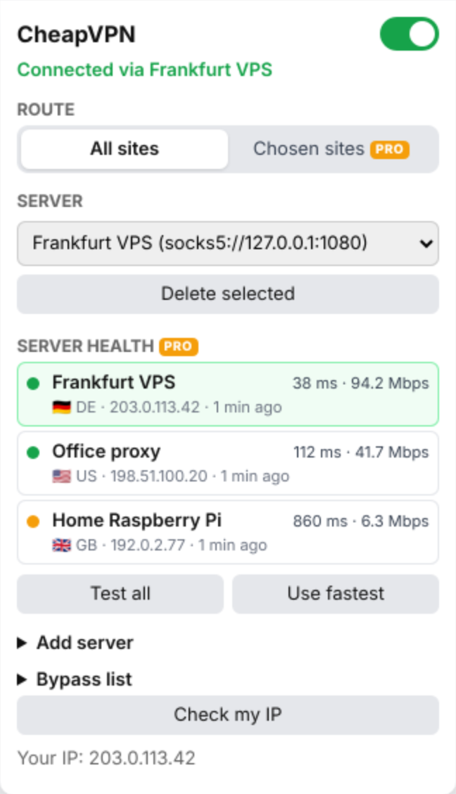

Put Chrome through your own SSH tunnel.
Send your browser's traffic through a server you run or rent, then switch back with one click. No settings pages and no sign-up.
In Chrome Web Store reviewThe install link goes here as soon as Google approves it.

From nothing to tunneled in three steps
-
Open a tunnel
In a terminal, connect to any server you can SSH into and leave it running.
ssh -D 1080 -N you@your-server
-
Add it to CheapVPN
Click the toolbar icon and open Add server. Choose SOCKS5, then enter host
127.0.0.1and port1080. -
Turn it on
Flip the switch and the toolbar shows ON. Click Check my IP to confirm you're coming out of your server. Flip it off to go direct again.
What you get
Free
No time limit
- SOCKS5, SOCKS4, HTTP and HTTPS proxies
- Save several servers and switch between them
- Automatic login for HTTP and HTTPS proxies
- Bypass list for local sites and chosen domains
- Check my IP
Pro
$2.99 once, no subscription
- Send only the sites you choose through the proxy, subdomains included
- Use a different server for each site
- Test every server for latency, speed and exit country
- Switch to the fastest server in one click
Before you install
- It isn't a VPN service
- CheapVPN comes with no servers. It connects Chrome to a proxy or tunnel you already have, and you need one for it to do anything.
- It only covers Chrome
- Other apps on your computer keep using your normal connection.
- Your server sees your traffic
- Whoever runs the proxy can see what your internet provider normally could, so use one you trust.
- SOCKS logins don't work
- Chrome doesn't support SOCKS usernames and passwords. Logins work with HTTP and HTTPS proxies. An
ssh -Dtunnel doesn't need one. - What it sends
- There are no analytics. It checks your Pro status with ExtensionPay, and it only contacts other services when you click Check my IP or Test all. Read the privacy policy.
- You can read the code
- The full source is on GitHub under the AGPL. There's no build step, so you can load it into Chrome yourself.
- When to use something else
- If you need PAC files or large auto-switch rule lists, ZeroOmega is free and does far more. CheapVPN is for people who want a switch.